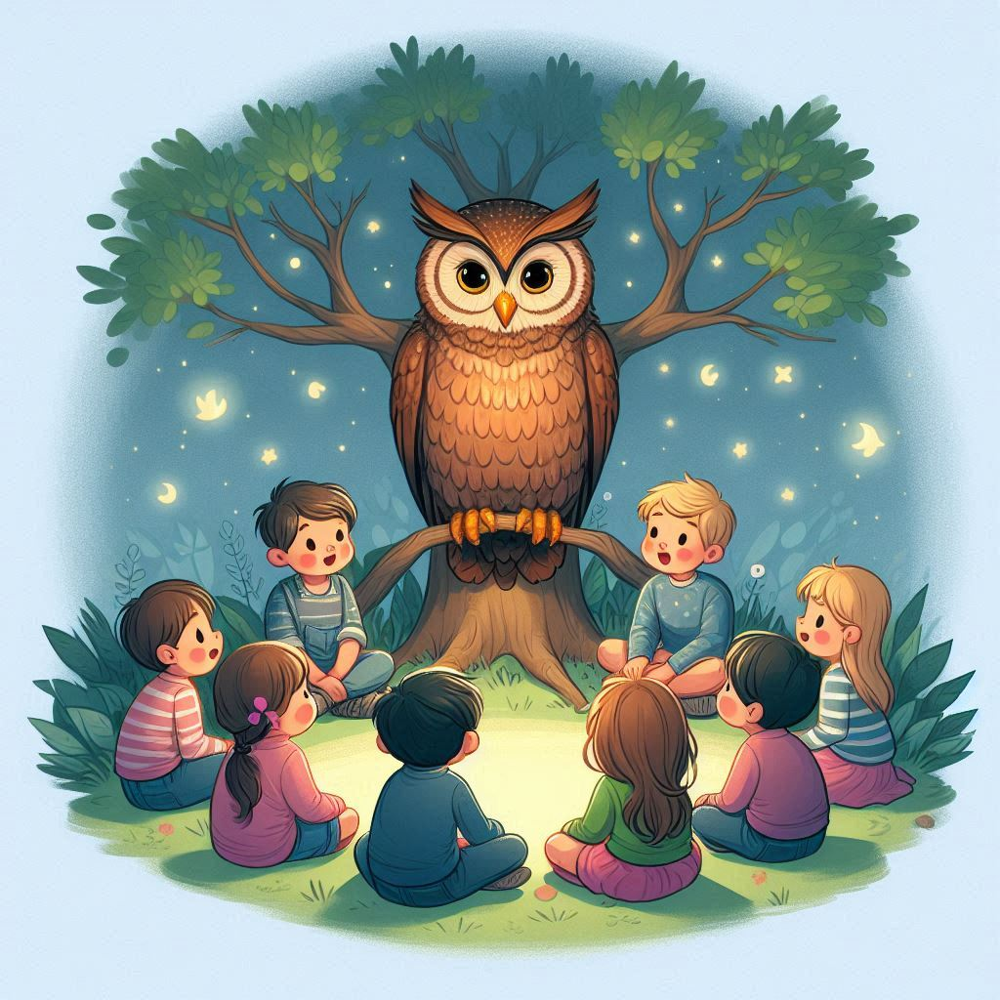
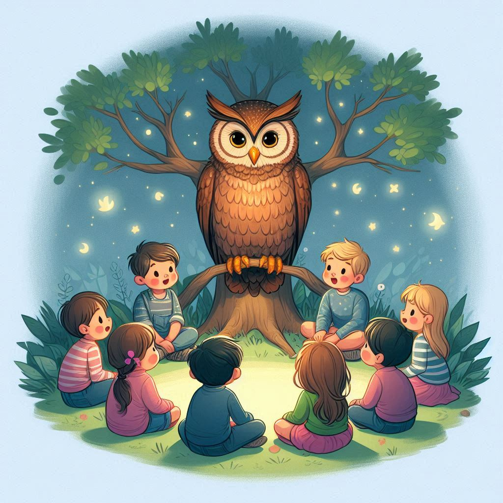

Loyal, diligent, quirky and kind: Werner is a great human being and a patient teacher. He’ll do his utmost and with good will and humour.
Werner is a conscientious and hard-working gentleman who put his students first. He has majored in English and Afrikaans/Dutch at the University of Cape Town, which has been internationally voted the best university in Africa. He has a talent for languages and has been selected by his fellow students to be their official class representative. One of his tasks was to liaise between the students and lectures, which is an indication of his leadership capabilities and communication skills. His lessons are prepared meticulously and with care. As a result, his lessons is clear, well prepared and easy to understand. He will be he ideal choice to have as a personal language teacher.
Werner was a conscientious and meticulous student when I taught him in 2021. He endeavoured to understand concepts deeply before applying his knowledge of the subject matter. He displayed logical and clear thinking. I like to think that this approach will reflect in his teaching where he will meticulously guide his students to a thorough and enduring understanding of the language.
Werner is a disciplined and educated tutor with an exceptional knowledge of English and Afrikaans. His love of language shows in his classes, and he will nurture an enjoyment for reading to his students. His strengths are critical reading and grammar.